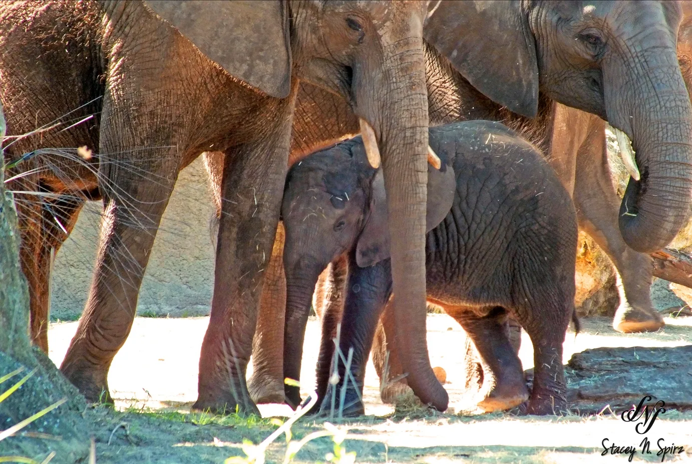

← All galleries
Nature & Wildlife
Creatures big and small — from the Hawaiian shoreline to moments farther from home.
9 selected photographs
← Back to portfolio
Together in the wild1 / 9
© Stacey Noelani Spirz · For viewing only. Want to use a photograph or order a print? Please contact me.
Swipe the photographs sideways or use the arrows. Tap the large image to see it full screen.
Keep exploring